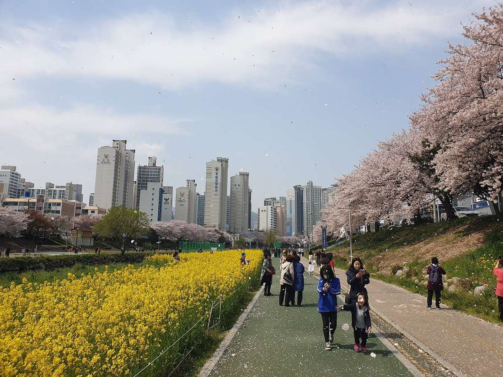

시험지 받아 온 날
"엄마, 이거
다 배운 건데…"
4. 이차방정식 x² = 4x를 푸시오.
x² ÷ x = 4x ÷ x
∴ x = 4
x = 0 은?
같은 유형을 또 틀린다면, 이유는 그 문제 앞에 있습니다
시험 문제를 직접 내 본 김다혜 원장이
아이마다 막힌 자리를 먼저 찾아 그 자리부터 가르칩니다.
온천동 초3~중3 수학 교습소.
전 중학교 수학 교사 · 수학 정교사 2급 · 교육대학원 수학교육 석사
학부모님이 자주 하시는 말
같은 말로 시작해도
아이마다 틀리는 곳은 다릅니다.
학원과 교습소, 무엇이 다를까요
전 중학교 수학 교사가 처음 상담부터 수업, 시험 전 점검까지 직접 맡습니다.
동래에서 수학학원과 수학과외를 함께 알아보고 계신다면 누가, 얼마나 오래 보는지 비교해 보세요.
학원
반 전체 진도가 기준이라 앞 단원에서 막혀도 다음 단원으로 넘어갈 수 있습니다.
과외
선생님이 바뀌면 새 선생님이 아이를 처음부터 다시 파악해야 합니다.
더 라온수학교습소
상담한 원장이 수업도, 시험 전 점검도 맡습니다. 지난달 틀린 문제를 기억하는 사람이 이번 달에도 가르칩니다.
교습소는 강사를 따로 둘 수 없는 곳이라 중간에 선생님이 바뀌지 않습니다.
여러 과목을 한곳에서 배우는 게 편한 아이라면 학원이 더 맞을 수 있습니다.
한 선생님에게 오래 배우고 싶은 아이라면 교습소를 권합니다.
교습소는 학원법 시행령에 따라 강사를 둘 수 없고 같은 시간 9명 이하로 운영됩니다.
말풍선을 누르면 원장 답이 나옵니다.
1명
처음부터 끝까지 보는 선생님
5명
한 반 최대 인원 확인필요
7개 학년
초3부터 중3까지
학교별 · 단원별 · 교육 소식
학교별 시험 정보, 단원별로 자주 막히는 자리, 동래 교육 소식을 정리합니다.
우리 아이 학교 수학 시험에서 서술형이 몇 퍼센트인지, 수행평가는 언제 무엇을 보는지는 학교가 공개하는 평가계획에 나와 있습니다. 학교알리미에서 찾는 순서와 수학에서 꼭 볼 항목을 정리했습니다.
중1 일차방정식에서 "아는 건데 틀렸어요"가 나오는 자리는 정해져 있습니다. 이항, 괄호, 분수 계수, 활용 문제 네 곳을 예시 풀이와 함께 정리하고 집에서 확인하는 방법을 알려 드립니다.
지금 중1~중3과 초6이 고3이 되는 해의 대입은 어떻게 바뀌었고, 무엇이 아직 논의 중인지 정리했습니다. 수능 수학 범위, 고교 내신 5등급, 다음 개편 논의까지 동래 학부모가 알아야 할 것만 담았습니다.

집에서 수학 때문에 다투지 않으셔도 됩니다.
막힌 자리는 교습소에서 찾겠습니다.
온천천 옆, 온천동에서